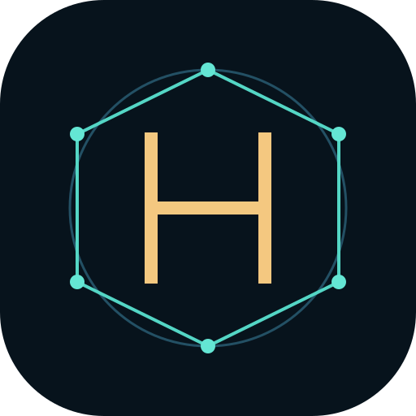

—
—
- Commit
- —
- Committer-Zeit
- —
- Erfasst
- —
GEBUNDENE DATEISPUR

| ID wählen | Quelle X | Quelle Y | Quelle Z | Beob. U | Beob. V | Gleiche Position |
|---|
Auswahl öffentlicher Git-Commits. Der Zeitstempel stammt aus Commit-Metadaten; er ist kein belegter Beginn einer Idee oder eine vollständige Entwicklungsgeschichte.
—
—
—
Wähle einen Punkt auf der Spur.
Zwei Zweige können sich im Bild begegnen. Eine Integration ist damit noch nicht erfolgt.
Gleiche Pfeile A → B → C. Die Kontaktreihenfolge entscheidet, ob ein Signal C erreichen kann.
Lokale Modellkerne aus SCARLET, ENDECK, Perspektivkorridor und Field Difference; dazu PRO-ATLAS-Phase und Prüfmembran, ein fiktionaler RED-ROOM-Vergleich und ein Rachel-inspiriertes Auftragspaar. Jeder beschreibt seinen eigenen Modellzustand.
Die Operationen erzeugen eigene Zustände und Receipts. Sie verändern weder Portale noch GitHub.
Vier Punktidentitäten bleiben gebunden, während Quelle und beobachtete Projektion auseinanderfallen können.
Ein synthetischer 3D-Quellzustand wird durch vier definierte Beobachtungsoperatoren gesehen. Die Punkt-ID bleibt in allen Ansichten gleich.
Gepinntes, geschlossenes fiktionales SCARLET-Schwarmmodell. Pfeile zeigen nur die im Quellmodell definierten gerichteten Hops. Personen, Kopien, Orte, Echos und Laufzeit sind erfundene Modellwerte; die Ansicht hat keinen Netz- oder Identitätszugriff.
Unverändertes Quellmodul: Juri Janovski (Projekt HALVETH), @Juri-Halveth · SCARLET-Commit 6913b81 ↗ · HALVETH PIRL 2.0. Adapter und UI sind lokale Ergänzungen; keine Billigung der neuen Oberfläche wird behauptet.
Eigenständige, Rachel-inspirierte lokale Demo: Ein Auftrag und sein Gegenauftrag sind getrennte Datensätze. Ausgleich ändert beide gemeinsam. Die echte Rachel-Ablage wird nicht berührt.
W / S, ↑ / ↓ oder Mausrad: vor und zurück. Auf Touchscreens vertikal wischen oder mit zwei Fingern zoomen. Esc: zurück.
Projektentitäten fliegen aus der Ferne auf dich zu und ziehen beim Vorwärtsflug vorbei. Der Projektatlas bietet dieselbe Auswahl ohne Flugbewegung. Der Zeitregler in den Modellräumen bleibt mit Tastatur, Maus oder Touch bedienbar.
Die dunkle Mitte, Sterne und Materiespuren sind eine künstlerische Raumzeit-Projektion, keine Simulation eines realen schwarzen Lochs.
Die Portale stammen aus einem redaktionellen öffentlichen Katalog. Die allgemeine Entfaltung und die eigene 0→1-Werkstatt sind ausdrücklich synthetische Modelle. SCARLET, ENDECK und Field Difference haben zusätzlich je eine begrenzte öffentliche Quellspur und einen getrennten lesenden NETZ-Quellraum; die gewählten Commits sind keine Modell-Ticks. SCARLET-Zellraum, ENDECK-Projektionsraum, Faltgrenzen-Vergleich, Realms-Weltregelraum und Field-Grenzregelraum führen getrennte lokale Softwaremodelle aus. Keine Live-Steuerung, kein Versand und keine Repository-Änderung.